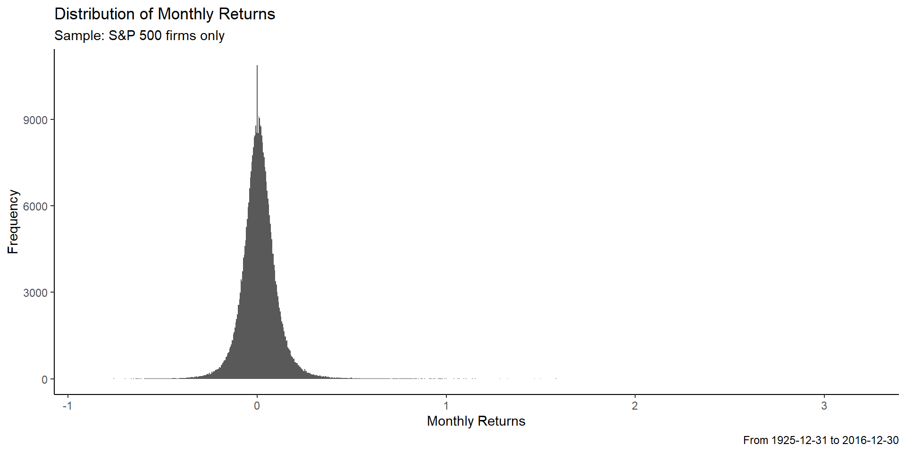
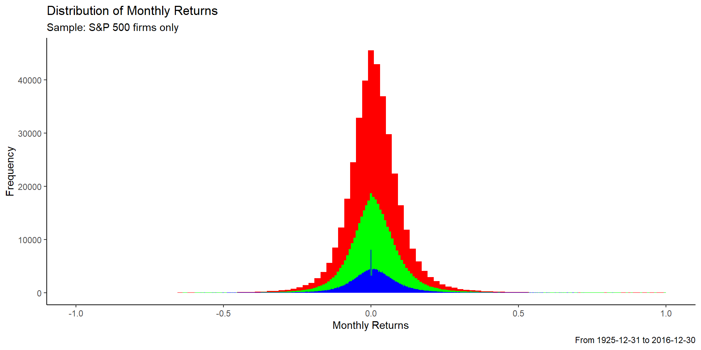
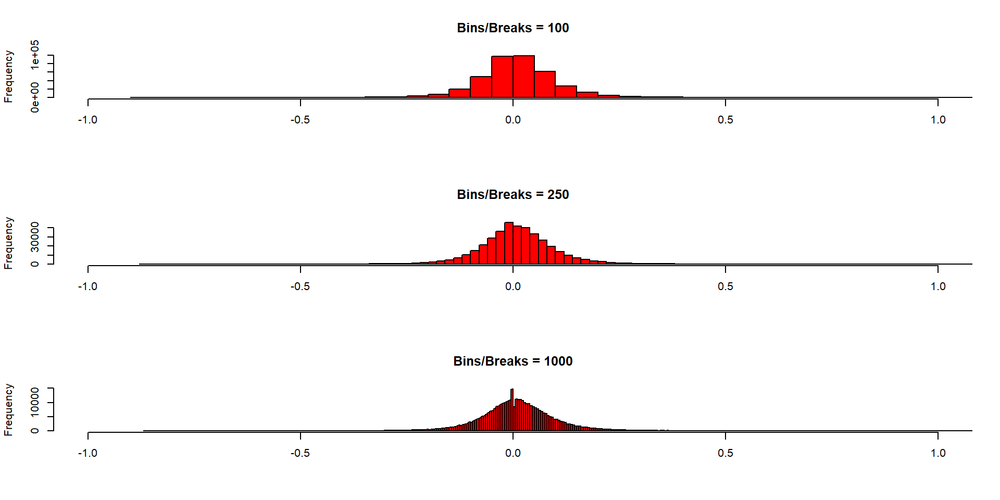
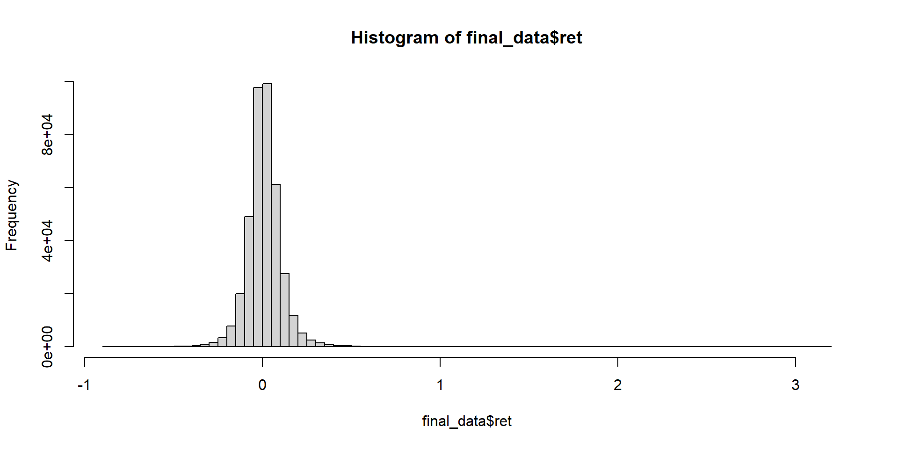
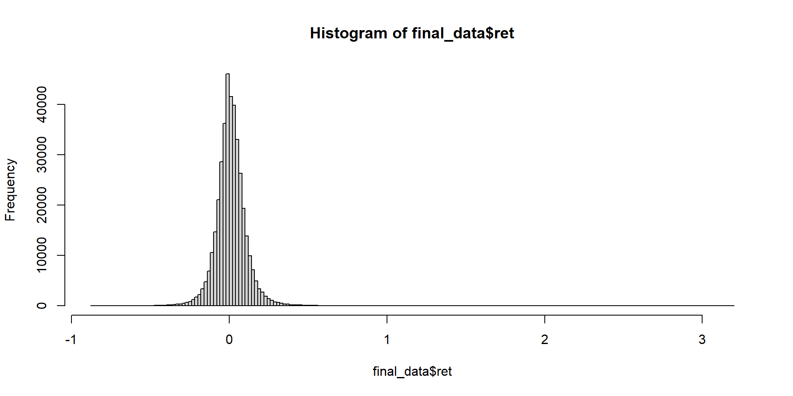
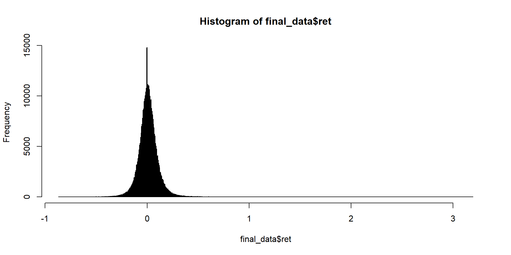
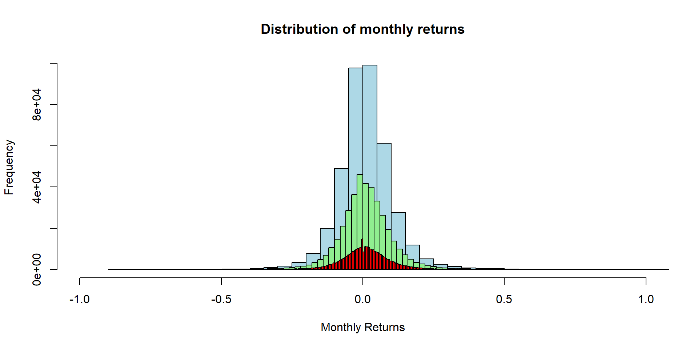

Lesson 7:
Stock Data Analysis
using dplyr, ggplot2, merge, date functions
Suresh Paul, C.Phil, M.S., B.Engg
Founder, CEO & Senior Data Scientist, Algorithm Basics LLC
Lecturer, Baldwin Wallace University
Founder, CEO & Senior Data Scientist, Algorithm Basics LLC
Lecturer, Baldwin Wallace University
Research question:
CAPM & 3-factor Model of Stock Reurns
Load libraries and Read Data
Install packages and load them
- install & load all R packages
- read the data
Read Paths where files are stored
- install & load all R packages
- read the data
Read Data - Monthly Returns Header File
- install & load all R packages
- read the data
Describe Monthly Returns Header File - head()
permno hsiccd hcomnam begret endret dummy
1: 10000 3990 OPTIMUM MANUFACTURING INC 1986-01-31 1987-05-29 1
2: 10001 4925 GAS NATURAL INC 1986-01-31 2016-12-30 1
3: 10002 6020 BANCTRUST FINANCIAL GROUP INC 1986-01-31 2013-01-31 1
4: 10003 6020 GREAT COUNTRY BK ASONIA CT 1986-01-31 1995-11-30 1
5: 10005 1310 WESTERN ENERGY RESOURCES INC 1986-01-31 1991-06-28 1
6: 10006 3743 A C F INDUSTRIES INC 1925-12-31 1984-05-31 1Describe Monthly Returns Header File - tail()
permno hsiccd hcomnam begret endret dummy
1: 93431 999 PACTERA TECHNOLOGY INTL LTD 2010-06-30 2014-02-28 1
2: 93432 7389 JIANGBO PHARMACEUTICALS INC 2010-06-30 2011-05-31 1
3: 93433 9999 VOLTARI CORP 2010-06-30 2016-11-30 1
4: 93434 9999 S & W SEED CO 2010-06-30 2016-12-30 1
5: 93435 6163 SINO CLEAN ENERGY INC 2010-06-30 2012-04-30 1
6: 93436 9999 TESLA MOTORS INC 2010-06-30 2016-12-30 1Describe Monthly Returns Header File - glimpse()
Rows: 31,599
Columns: 6
$ permno <int> 10000, 10001, 10002, 10003, 10005, 10006, 10007, 10008, 10009,…
$ hsiccd <int> 3990, 4925, 6020, 6020, 1310, 3743, 7370, 3430, 6030, 3840, 73…
$ hcomnam <chr> "OPTIMUM MANUFACTURING INC", "GAS NATURAL INC", "BANCTRUST FIN…
$ begret <date> 1986-01-31, 1986-01-31, 1986-01-31, 1986-01-31, 1986-01-31, 1…
$ endret <date> 1987-05-29, 2016-12-30, 2013-01-31, 1995-11-30, 1991-06-28, 1…
$ dummy <int> 1, 1, 1, 1, 1, 1, 1, 1, 1, 1, 1, 1, 1, 1, 1, 1, 1, 1, 1, 1, 1,…Read Data - Monthly Market Returns File
- install & load all R packages
- read the data
Describe Monthly Market Returns File - glimpse()
Rows: 1,117
Columns: 12
$ caldt <chr> "31dec1925", "30jan1926", "27feb1926", "31mar1926", "30apr1926"…
$ vwretd <dbl> NA, -0.001783081, -0.033296460, -0.057707900, 0.038522340, 0.01…
$ vwretx <dbl> NA, -0.003979716, -0.037875680, -0.062007290, 0.034855850, 0.00…
$ ewretd <dbl> NA, 0.006457145, -0.039979140, -0.067915010, 0.031440850, 0.012…
$ ewretx <dbl> NA, 0.003249569, -0.042450580, -0.073274730, 0.027121340, 0.009…
$ totval <dbl> 15236830, 15277664, 14712895, 14012079, 14500482, 14778796, 155…
$ totcnt <int> 89, 89, 89, 89, 89, 89, 89, 89, 89, 89, 89, 89, 89, 89, 89, 89,…
$ usdval <dbl> NA, 15236830, 15277664, 14712895, 14012079, 14500482, 14762818,…
$ usdcnt <int> NA, 79, 81, 81, 82, 82, 83, 82, 83, 83, 81, 82, 84, 84, 85, 85,…
$ spindx <dbl> 12.46, 12.74, 12.18, 11.46, 11.72, 11.81, 12.32, 12.88, 13.10, …
$ sprtrn <dbl> NA, 0.022471910, -0.043956050, -0.059113300, 0.022687610, 0.007…
$ date <date> 1925-12-31, 1926-01-30, 1926-02-27, 1926-03-31, 1926-04-30, 19…Describe Dates File - glimpse()
Read Data - S&P 500 list file
- install & load all R packages
- read the data
Describe S&P 500 list - glimpse()
Rows: 1,950
Columns: 3
$ permno <int> 10006, 10030, 10049, 10057, 10078, 10102, 10104, 10107, 10108, …
$ begdt <date> 1957-03-01, 1957-03-01, 1925-12-31, 1957-03-01, 1992-08-20, 19…
$ enddt <date> 1984-07-18, 1969-01-08, 1932-10-01, 1992-07-02, 2010-01-28, 19…Read Data - Monthly Returns file
- install & load all R packages
- read the data
Describe - Monthly Returns file 1
permno date ret
Min. :10000 Min. :1925-12-31 Min. :-0.99
1st Qu.:24265 1st Qu.:1979-04-30 1st Qu.:-0.06
Median :57534 Median :1993-04-30 Median : 0.00
Mean :53863 Mean :1989-10-17 Mean : 0.01
3rd Qu.:80415 3rd Qu.:2004-01-30 3rd Qu.: 0.06
Max. :93436 Max. :2016-12-30 Max. :24.00
NA's :162512 Rows: 4,327,006
Columns: 3
$ permno <int> 10000, 10000, 10000, 10000, 10000, 10000, 10000, 10000, 10000, …
$ date <date> 1985-12-31, 1986-01-31, 1986-02-28, 1986-03-31, 1986-04-30, 19…
$ ret <dbl> NA, NA, -0.257142872, 0.365384609, -0.098591551, -0.222656250, …Read Data - Monthly Returns file 2
- install & load all R packages
- read the data
Describe - Monthly Returns file 2
permno date ret
Min. :10000 Min. :1926-01-30 Min. :-0.98809
1st Qu.:24134 1st Qu.:1979-04-30 1st Qu.:-0.05882
Median :57349 Median :1993-05-28 Median : 0.00000
Mean :53772 Mean :1989-10-28 Mean : 0.01109
3rd Qu.:80393 3rd Qu.:2004-03-31 3rd Qu.: 0.06452
Max. :93436 Max. :2016-12-30 Max. :24.00000 Rows: 4,164,494
Columns: 3
$ permno <int> 10000, 10000, 10000, 10000, 10000, 10000, 10000, 10000, 10000, …
$ date <date> 1986-02-28, 1986-03-31, 1986-04-30, 1986-05-30, 1986-06-30, 19…
$ ret <dbl> -0.257142872, 0.365384609, -0.098591551, -0.222656250, -0.00502…Combine, Merge All datasets
Step 1: Get all possible trading dates
Glimpse of Step 1
Rows: 35,296,083
Columns: 6
$ permno <int> 10000, 10000, 10000, 10000, 10000, 10000, 10000, 10000, 10000,…
$ hsiccd <int> 3990, 3990, 3990, 3990, 3990, 3990, 3990, 3990, 3990, 3990, 39…
$ hcomnam <chr> "OPTIMUM MANUFACTURING INC", "OPTIMUM MANUFACTURING INC", "OPT…
$ begret <date> 1986-01-31, 1986-01-31, 1986-01-31, 1986-01-31, 1986-01-31, 1…
$ endret <date> 1987-05-29, 1987-05-29, 1987-05-29, 1987-05-29, 1987-05-29, 1…
$ date <date> 1925-12-31, 1926-01-30, 1926-02-27, 1926-03-31, 1926-04-30, 1…Step 2: Get returns
Glimpse of Step 2
Rows: 4,275,542
Columns: 5
$ permno <int> 10000, 10000, 10000, 10000, 10000, 10000, 10000, 10000, 10000,…
$ hsiccd <int> 3990, 3990, 3990, 3990, 3990, 3990, 3990, 3990, 3990, 3990, 39…
$ hcomnam <chr> "OPTIMUM MANUFACTURING INC", "OPTIMUM MANUFACTURING INC", "OPT…
$ date <date> 1986-01-31, 1986-02-28, 1986-03-31, 1986-04-30, 1986-05-30, 1…
$ ret <dbl> NA, -0.257142872, 0.365384609, -0.098591551, -0.222656250, -0.…Step 3: restrict firms to S&P 500 only
stock_data3 <- stock_data2 %>%
# when was the firm in the s&p list?
left_join(
msp500list,
by = c("permno")
) %>%
# restrict sample
filter(
# drop unmerged data (S&P 500 firms only)
!is.na(begdt) &
# keep only firms within date range
(date >= begdt & date <= enddt) &
# define a sample period, if any
between(date, as.Date("1925-01-01"), as.Date("2020-12-31"))
) %>%
select(-begdt, -enddt) %>%
# what to do with missing returns?
# replace with ZERO
mutate(
ret = ifelse(is.na(ret), 0, ret),
month = as.integer(month(date)),
year = as.integer(year(date))
)Glimpse of Step 3
Rows: 392,115
Columns: 7
$ permno <int> 10006, 10006, 10006, 10006, 10006, 10006, 10006, 10006, 10006,…
$ hsiccd <int> 3743, 3743, 3743, 3743, 3743, 3743, 3743, 3743, 3743, 3743, 37…
$ hcomnam <chr> "A C F INDUSTRIES INC", "A C F INDUSTRIES INC", "A C F INDUSTR…
$ date <date> 1957-03-29, 1957-04-30, 1957-05-31, 1957-06-28, 1957-07-31, 1…
$ ret <dbl> 0.018404908, -0.008032128, 0.004048583, -0.016393442, 0.033333…
$ month <int> 3, 4, 5, 6, 7, 8, 9, 10, 11, 12, 1, 2, 3, 4, 5, 6, 7, 8, 9, 10…
$ year <int> 1957, 1957, 1957, 1957, 1957, 1957, 1957, 1957, 1957, 1957, 19…DO ALL THE PREVIOUS STEPS IN ONE SHOT
Full Steps
stock_data <- msfhdr %>%
# get unique firms
distinct() %>%
# get trading dates for each firm
left_join( # merge dates ...
dates,
by = "dummy"
) %>%
select(-dummy) %>%
# get return data
left_join(
msf,
by = c("permno", "date")
) %>%
# limit to trading trades
filter(
date >= begret & date <= endret
) %>%
select(-begret, -endret) %>%
# when was the firm in the s&p list?
left_join(
msp500list,
by = c("permno")
) %>%
# restrict sample
filter(
# drop unmerged data (S&P 500 firms only)
!is.na(begdt) &
# keep only firms within date range
(date >= begdt & date <= enddt) &
# define a sample period, if any
between(date, as.Date("1925-01-01"),
as.Date("2020-12-31"))
) %>%
select(-begdt, -enddt) %>%
# what to do with missing returns?
# replace with ZERO
mutate(
ret = ifelse(is.na(ret), 0, ret),
month = as.integer(month(date)),
year = as.integer(year(date))
)Glimpse of complete dataset
Rows: 392,115
Columns: 7
$ permno <int> 10006, 10006, 10006, 10006, 10006, 10006, 10006, 10006, 10006,…
$ hsiccd <int> 3743, 3743, 3743, 3743, 3743, 3743, 3743, 3743, 3743, 3743, 37…
$ hcomnam <chr> "A C F INDUSTRIES INC", "A C F INDUSTRIES INC", "A C F INDUSTR…
$ date <date> 1957-03-29, 1957-04-30, 1957-05-31, 1957-06-28, 1957-07-31, 1…
$ ret <dbl> 0.018404908, -0.008032128, 0.004048583, -0.016393442, 0.033333…
$ month <int> 3, 4, 5, 6, 7, 8, 9, 10, 11, 12, 1, 2, 3, 4, 5, 6, 7, 8, 9, 10…
$ year <int> 1957, 1957, 1957, 1957, 1957, 1957, 1957, 1957, 1957, 1957, 19…House-cleaning
Step 4: Get Industry classification
Glimpse of Step 4
Step 5: Get three-factors
Glimpse of Step 5
Rows: 1,155
Columns: 6
$ mktpre <dbl> 0.0296, 0.0264, 0.0036, -0.0324, 0.0253, 0.0262, -0.0006, 0.041…
$ smb <dbl> -0.0256, -0.0117, -0.0140, -0.0009, -0.0010, -0.0003, -0.0037, …
$ hml <dbl> -0.0243, 0.0382, 0.0013, 0.0070, -0.0051, -0.0005, 0.0454, 0.02…
$ rf <dbl> 0.0022, 0.0025, 0.0023, 0.0032, 0.0031, 0.0028, 0.0025, 0.0026,…
$ year <int> 1926, 1926, 1926, 1926, 1926, 1926, 1927, 1927, 1927, 1927, 192…
$ month <int> 7, 8, 9, 10, 11, 12, 1, 2, 3, 4, 5, 6, 7, 8, 9, 10, 11, 12, 1, …Step 6: SIC and FFInd merge
final_data <-
sqldf("select *
from stock_data LEFT JOIN ffind on
(stock_data.hsiccd >= ffind.sic_start and
stock_data.hsiccd <= ffind.sic_end)",
stringsAsFactors = FALSE) %>%
# replace missing with ....
mutate(
ffclass5 = as.factor(ifelse(is.na(ffclass5), 5, ffclass5)),
sic_start = ifelse(is.na(sic_start), -9999, sic_start),
sic_end = ifelse(is.na(sic_end), -9999, sic_end)
) %>%
# merge 3-factors to stock_data
left_join(
three_factor,
by = c("year", "month")
) %>%
select(-hsiccd, -sic_start, -sic_end)House-cleaning 2
Regression Analysis
CAPM
sample: industry 1
- Consumer Durables, Nondurables, Wholesale, Retail, and Some Services (Laundries, Repair Shops)
# ols regression ...
fit1capm <- lm(ret ~ mktpre,
final_data[which(final_data$ffclass5 == 1),])
# show results
summary(fit1capm)
Call:
lm(formula = ret ~ mktpre, data = final_data[which(final_data$ffclass5 ==
1), ])
Residuals:
Min 1Q Median 3Q Max
-0.73687 -0.04473 -0.00383 0.03988 1.93290
Coefficients:
Estimate Std. Error t value Pr(>|t|)
(Intercept) 0.0058823 0.0002664 22.08 <2e-16 ***
mktpre 1.0209321 0.0057940 176.20 <2e-16 ***
---
Signif. codes: 0 '***' 0.001 '**' 0.01 '*' 0.05 '.' 0.1 ' ' 1
Residual standard error: 0.08194 on 95969 degrees of freedom
(133 observations deleted due to missingness)
Multiple R-squared: 0.2444, Adjusted R-squared: 0.2444
F-statistic: 3.105e+04 on 1 and 95969 DF, p-value: < 2.2e-16results for industry 1
(Intercept) mktpre
0.005882275 1.020932138 2.5 % 97.5 %
(Intercept) 0.005360067 0.006404483
mktpre 1.009575873 1.032288403 (Intercept) mktpre
(Intercept) 7.098719e-08 -1.852744e-07
mktpre -1.852744e-07 3.357097e-05sample: industry 2
- Manufacturing, Energy, and Utilities
# ols regression ...
fit2capm <- lm(ret ~ mktpre,
final_data[which(final_data$ffclass5 == 2),])
# show results
summary(fit2capm)
Call:
lm(formula = ret ~ mktpre, data = final_data[which(final_data$ffclass5 ==
2), ])
Residuals:
Min 1Q Median 3Q Max
-0.82844 -0.04290 -0.00405 0.03807 2.27108
Coefficients:
Estimate Std. Error t value Pr(>|t|)
(Intercept) 0.0046485 0.0002088 22.26 <2e-16 ***
mktpre 1.0548852 0.0044469 237.22 <2e-16 ***
---
Signif. codes: 0 '***' 0.001 '**' 0.01 '*' 0.05 '.' 0.1 ' ' 1
Residual standard error: 0.07877 on 144332 degrees of freedom
(245 observations deleted due to missingness)
Multiple R-squared: 0.2805, Adjusted R-squared: 0.2805
F-statistic: 5.627e+04 on 1 and 144332 DF, p-value: < 2.2e-16results for industry 2
(Intercept) mktpre
0.004648534 1.054885245 2.5 % 97.5 %
(Intercept) 0.004239217 0.005057851
mktpre 1.046169502 1.063600987 (Intercept) mktpre
(Intercept) 4.361308e-08 -1.114004e-07
mktpre -1.114004e-07 1.977449e-05sample: industry 3
- Business Equipment, Telephone and Television Transmission
# ols regression ...
fit3capm <- lm(ret ~ mktpre,
final_data[which(final_data$ffclass5 == 3),])
# show results
summary(fit3capm)
Call:
lm(formula = ret ~ mktpre, data = final_data[which(final_data$ffclass5 ==
3), ])
Residuals:
Min 1Q Median 3Q Max
-0.75450 -0.04992 -0.00331 0.04500 1.55155
Coefficients:
Estimate Std. Error t value Pr(>|t|)
(Intercept) 0.0043007 0.0004597 9.356 <2e-16 ***
mktpre 1.3296119 0.0100207 132.687 <2e-16 ***
---
Signif. codes: 0 '***' 0.001 '**' 0.01 '*' 0.05 '.' 0.1 ' ' 1
Residual standard error: 0.09826 on 46392 degrees of freedom
(34 observations deleted due to missingness)
Multiple R-squared: 0.2751, Adjusted R-squared: 0.2751
F-statistic: 1.761e+04 on 1 and 46392 DF, p-value: < 2.2e-16results for industry 3
(Intercept) mktpre
0.004300688 1.329611869 2.5 % 97.5 %
(Intercept) 0.003399762 0.005201613
mktpre 1.309971195 1.349252543 (Intercept) mktpre
(Intercept) 2.112803e-07 -5.630820e-07
mktpre -5.630820e-07 1.004139e-04sample: industry 4
- Business Equipment, Telephone and Television Transmission
# ols regression ...
fit4capm <- lm(ret ~ mktpre,
final_data[which(final_data$ffclass5 == 4),])
# show results
summary(fit4capm)
Call:
lm(formula = ret ~ mktpre, data = final_data[which(final_data$ffclass5 ==
4), ])
Residuals:
Min 1Q Median 3Q Max
-0.66390 -0.04149 -0.00183 0.04006 0.84532
Coefficients:
Estimate Std. Error t value Pr(>|t|)
(Intercept) 0.007335 0.000546 13.43 <2e-16 ***
mktpre 0.854648 0.012398 68.94 <2e-16 ***
---
Signif. codes: 0 '***' 0.001 '**' 0.01 '*' 0.05 '.' 0.1 ' ' 1
Residual standard error: 0.0753 on 19330 degrees of freedom
Multiple R-squared: 0.1973, Adjusted R-squared: 0.1973
F-statistic: 4752 on 1 and 19330 DF, p-value: < 2.2e-16results for industry 4
(Intercept) mktpre
0.007334563 0.854647882 2.5 % 97.5 %
(Intercept) 0.006264263 0.008404864
mktpre 0.830347171 0.878948593 (Intercept) mktpre
(Intercept) 2.981678e-07 -8.679526e-07
mktpre -8.679526e-07 1.537048e-04sample: industry 5
- Business Equipment, Telephone and Television Transmission
# ols regression ...
fit5capm <- lm(ret ~ mktpre,
final_data[which(final_data$ffclass5 == 5),])
# show results
summary(fit5capm)
Call:
lm(formula = ret ~ mktpre, data = final_data[which(final_data$ffclass5 ==
5), ])
Residuals:
Min 1Q Median 3Q Max
-0.86110 -0.04671 -0.00450 0.04102 2.97845
Coefficients:
Estimate Std. Error t value Pr(>|t|)
(Intercept) 0.0039189 0.0003133 12.51 <2e-16 ***
mktpre 1.2328797 0.0065935 186.98 <2e-16 ***
---
Signif. codes: 0 '***' 0.001 '**' 0.01 '*' 0.05 '.' 0.1 ' ' 1
Residual standard error: 0.09089 on 85502 degrees of freedom
(168 observations deleted due to missingness)
Multiple R-squared: 0.2902, Adjusted R-squared: 0.2902
F-statistic: 3.496e+04 on 1 and 85502 DF, p-value: < 2.2e-16results for industry 5
(Intercept) mktpre
0.003918881 1.232879695 2.5 % 97.5 %
(Intercept) 0.003304843 0.004532919
mktpre 1.219956436 1.245802954 (Intercept) mktpre
(Intercept) 9.814805e-08 -2.58480e-07
mktpre -2.584800e-07 4.34746e-05sample: full sample
- all industries
Call:
lm(formula = ret ~ mktpre, data = final_data)
Residuals:
Min 1Q Median 3Q Max
-0.86321 -0.04491 -0.00391 0.04012 2.99824
Coefficients:
Estimate Std. Error t value Pr(>|t|)
(Intercept) 0.0048828 0.0001366 35.76 <2e-16 ***
mktpre 1.1099140 0.0029318 378.58 <2e-16 ***
---
Signif. codes: 0 '***' 0.001 '**' 0.01 '*' 0.05 '.' 0.1 ' ' 1
Residual standard error: 0.08481 on 391533 degrees of freedom
(580 observations deleted due to missingness)
Multiple R-squared: 0.268, Adjusted R-squared: 0.268
F-statistic: 1.433e+05 on 1 and 391533 DF, p-value: < 2.2e-16results for industry 5
(Intercept) mktpre
0.004882821 1.109914034 2.5 % 97.5 %
(Intercept) 0.004615175 0.005150466
mktpre 1.104167785 1.115660283 (Intercept) mktpre
(Intercept) 1.864753e-08 -4.874631e-08
mktpre -4.874631e-08 8.595477e-06Three-factor Model
sample: industry 1
- Consumer Durables, Nondurables, Wholesale, Retail, and Some Services (Laundries, Repair Shops)
# ols regression ...
fit1ff3 <- lm(ret ~ mktpre + smb + hml,
final_data[which(final_data$ffclass5 == 1),])
# show results
summary(fit1ff3)
Call:
lm(formula = ret ~ mktpre + smb + hml, data = final_data[which(final_data$ffclass5 ==
1), ])
Residuals:
Min 1Q Median 3Q Max
-0.74523 -0.04487 -0.00357 0.04032 1.82304
Coefficients:
Estimate Std. Error t value Pr(>|t|)
(Intercept) 0.0043821 0.0002671 16.40 <2e-16 ***
mktpre 0.9972702 0.0060675 164.36 <2e-16 ***
smb 0.2249499 0.0092447 24.33 <2e-16 ***
hml 0.3142328 0.0092512 33.97 <2e-16 ***
---
Signif. codes: 0 '***' 0.001 '**' 0.01 '*' 0.05 '.' 0.1 ' ' 1
Residual standard error: 0.08125 on 95967 degrees of freedom
(133 observations deleted due to missingness)
Multiple R-squared: 0.2571, Adjusted R-squared: 0.2571
F-statistic: 1.107e+04 on 3 and 95967 DF, p-value: < 2.2e-16results for industry 1
(Intercept) mktpre smb hml
0.004382086 0.997270173 0.224949867 0.314232781 2.5 % 97.5 %
(Intercept) 0.003858503 0.004905669
mktpre 0.985377940 1.009162406
smb 0.206830327 0.243069406
hml 0.296100497 0.332365065 (Intercept) mktpre smb hml
(Intercept) 7.136146e-08 -1.862470e-07 -1.037652e-07 -3.572692e-07
mktpre -1.862470e-07 3.681457e-05 -1.700062e-05 4.830727e-06
smb -1.037652e-07 -1.700062e-05 8.546478e-05 5.952668e-06
hml -3.572692e-07 4.830727e-06 5.952668e-06 8.558504e-05sample: industry 2
- Manufacturing, Energy, and Utilities
# ols regression ...
fit2ff3 <- lm(ret ~ mktpre + smb + hml,
final_data[which(final_data$ffclass5 == 2),])
# show results
summary(fit2ff3)
Call:
lm(formula = ret ~ mktpre + smb + hml, data = final_data[which(final_data$ffclass5 ==
2), ])
Residuals:
Min 1Q Median 3Q Max
-0.82273 -0.04246 -0.00365 0.03797 2.12518
Coefficients:
Estimate Std. Error t value Pr(>|t|)
(Intercept) 0.0029588 0.0002085 14.19 <2e-16 ***
mktpre 1.0500328 0.0046355 226.52 <2e-16 ***
smb 0.0888871 0.0071886 12.37 <2e-16 ***
hml 0.4014674 0.0070015 57.34 <2e-16 ***
---
Signif. codes: 0 '***' 0.001 '**' 0.01 '*' 0.05 '.' 0.1 ' ' 1
Residual standard error: 0.07786 on 144330 degrees of freedom
(245 observations deleted due to missingness)
Multiple R-squared: 0.297, Adjusted R-squared: 0.297
F-statistic: 2.033e+04 on 3 and 144330 DF, p-value: < 2.2e-16results for industry 2
(Intercept) mktpre smb hml
0.00295875 1.05003282 0.08888706 0.40146745 2.5 % 97.5 %
(Intercept) 0.002550156 0.003367344
mktpre 1.040947259 1.059118383
smb 0.074797577 0.102976552
hml 0.387744592 0.415190299 (Intercept) mktpre smb hml
(Intercept) 4.345905e-08 -1.041627e-07 -5.516618e-08 -1.984441e-07
mktpre -1.041627e-07 2.148820e-05 -1.045094e-05 1.185689e-06
smb -5.516618e-08 -1.045094e-05 5.167577e-05 2.119555e-06
hml -1.984441e-07 1.185689e-06 2.119555e-06 4.902136e-05sample: industry 3
- Business Equipment, Telephone and Television Transmission
# ols regression ...
fit3ff3 <- lm(ret ~ mktpre + smb + hml,
final_data[which(final_data$ffclass5 == 3),])
# show results
summary(fit3ff3)
Call:
lm(formula = ret ~ mktpre + smb + hml, data = final_data[which(final_data$ffclass5 ==
3), ])
Residuals:
Min 1Q Median 3Q Max
-0.75647 -0.05008 -0.00345 0.04496 1.56636
Coefficients:
Estimate Std. Error t value Pr(>|t|)
(Intercept) 0.0051421 0.0004616 11.14 <2e-16 ***
mktpre 1.2578182 0.0104104 120.82 <2e-16 ***
smb 0.2473003 0.0153862 16.07 <2e-16 ***
hml -0.2496958 0.0156336 -15.97 <2e-16 ***
---
Signif. codes: 0 '***' 0.001 '**' 0.01 '*' 0.05 '.' 0.1 ' ' 1
Residual standard error: 0.09763 on 46390 degrees of freedom
(34 observations deleted due to missingness)
Multiple R-squared: 0.2845, Adjusted R-squared: 0.2845
F-statistic: 6149 on 3 and 46390 DF, p-value: < 2.2e-16results for industry 3
(Intercept) mktpre smb hml
0.005142104 1.257818249 0.247300284 -0.249695839 2.5 % 97.5 %
(Intercept) 0.004237331 0.006046877
mktpre 1.237413725 1.278222774
smb 0.217143100 0.277457467
hml -0.280337871 -0.219053806 (Intercept) mktpre smb hml
(Intercept) 2.130886e-07 -6.021659e-07 -3.387640e-07 -1.037977e-06
mktpre -6.021659e-07 1.083762e-04 -3.965380e-05 1.858435e-05
smb -3.387640e-07 -3.965380e-05 2.367351e-04 3.820516e-05
hml -1.037977e-06 1.858435e-05 3.820516e-05 2.444085e-04sample: industry 4
- Business Equipment, Telephone and Television Transmission
# ols regression ...
fit4ff3 <- lm(ret ~ mktpre + smb + hml,
final_data[which(final_data$ffclass5 == 4),])
# show results
summary(fit4ff3)
Call:
lm(formula = ret ~ mktpre + smb + hml, data = final_data[which(final_data$ffclass5 ==
4), ])
Residuals:
Min 1Q Median 3Q Max
-0.67651 -0.04136 -0.00172 0.03977 0.85997
Coefficients:
Estimate Std. Error t value Pr(>|t|)
(Intercept) 0.0080069 0.0005512 14.526 < 2e-16 ***
mktpre 0.8746879 0.0130576 66.987 < 2e-16 ***
smb -0.1983947 0.0190253 -10.428 < 2e-16 ***
hml -0.1245042 0.0200123 -6.221 5.03e-10 ***
---
Signif. codes: 0 '***' 0.001 '**' 0.01 '*' 0.05 '.' 0.1 ' ' 1
Residual standard error: 0.07505 on 19328 degrees of freedom
Multiple R-squared: 0.2027, Adjusted R-squared: 0.2026
F-statistic: 1638 on 3 and 19328 DF, p-value: < 2.2e-16results for industry 4
(Intercept) mktpre smb hml
0.008006876 0.874687904 -0.198394674 -0.124504243 2.5 % 97.5 %
(Intercept) 0.006926485 0.009087267
mktpre 0.849093893 0.900281916
smb -0.235685853 -0.161103496
hml -0.163730146 -0.085278341 (Intercept) mktpre smb hml
(Intercept) 3.038165e-07 -1.005410e-06 -5.299388e-07 -1.722237e-06
mktpre -1.005410e-06 1.705007e-04 -6.012574e-05 4.516906e-05
smb -5.299388e-07 -6.012574e-05 3.619609e-04 6.067563e-05
hml -1.722237e-06 4.516906e-05 6.067563e-05 4.004934e-04sample: industry 5
- Business Equipment, Telephone and Television Transmission
# ols regression ...
fit5ff3 <- lm(ret ~ mktpre + smb + hml,
final_data[which(final_data$ffclass5 == 5),])
# show results
summary(fit5ff3)
Call:
lm(formula = ret ~ mktpre + smb + hml, data = final_data[which(final_data$ffclass5 ==
5), ])
Residuals:
Min 1Q Median 3Q Max
-0.86181 -0.04591 -0.00392 0.04042 2.79945
Coefficients:
Estimate Std. Error t value Pr(>|t|)
(Intercept) 0.0013115 0.0003069 4.273 1.93e-05 ***
mktpre 1.2153473 0.0067120 181.070 < 2e-16 ***
smb 0.1521729 0.0103395 14.718 < 2e-16 ***
hml 0.6919922 0.0099466 69.571 < 2e-16 ***
---
Signif. codes: 0 '***' 0.001 '**' 0.01 '*' 0.05 '.' 0.1 ' ' 1
Residual standard error: 0.08837 on 85500 degrees of freedom
(168 observations deleted due to missingness)
Multiple R-squared: 0.329, Adjusted R-squared: 0.3289
F-statistic: 1.397e+04 on 3 and 85500 DF, p-value: < 2.2e-16results for industry 5
(Intercept) mktpre smb hml
0.00131149 1.21534734 0.15217290 0.69199218 2.5 % 97.5 %
(Intercept) 0.0007099813 0.001912998
mktpre 1.2021918240 1.228502858
smb 0.1319076174 0.172438179
hml 0.6724969734 0.711487394 (Intercept) mktpre smb hml
(Intercept) 9.418357e-08 -2.279890e-07 -1.169352e-07 -3.605159e-07
mktpre -2.279890e-07 4.505130e-05 -2.047133e-05 2.765219e-07
smb -1.169352e-07 -2.047133e-05 1.069047e-04 7.310102e-06
hml -3.605159e-07 2.765219e-07 7.310102e-06 9.893441e-05sample: full sample
- all industries
# ols regression ...
fitff3 <- lm(ret ~ mktpre + smb + hml, final_data)
# show results
summary(fitff3)
Call:
lm(formula = ret ~ mktpre + smb + hml, data = final_data)
Residuals:
Min 1Q Median 3Q Max
-0.86391 -0.04470 -0.00357 0.04027 2.89361
Coefficients:
Estimate Std. Error t value Pr(>|t|)
(Intercept) 0.0033647 0.0001368 24.60 <2e-16 ***
mktpre 1.0983119 0.0030557 359.43 <2e-16 ***
smb 0.1493329 0.0046726 31.96 <2e-16 ***
hml 0.3504940 0.0046007 76.18 <2e-16 ***
---
Signif. codes: 0 '***' 0.001 '**' 0.01 '*' 0.05 '.' 0.1 ' ' 1
Residual standard error: 0.08412 on 391531 degrees of freedom
(580 observations deleted due to missingness)
Multiple R-squared: 0.2799, Adjusted R-squared: 0.2799
F-statistic: 5.073e+04 on 3 and 391531 DF, p-value: < 2.2e-16results for industry 5
(Intercept) mktpre smb hml
0.003364698 1.098311939 0.149332907 0.350494005 2.5 % 97.5 %
(Intercept) 0.003096656 0.003632739
mktpre 1.092322805 1.104301073
smb 0.140174655 0.158491159
hml 0.341476859 0.359511150 (Intercept) mktpre smb hml
(Intercept) 1.870274e-08 -4.728892e-08 -2.541988e-08 -8.520389e-08
mktpre -4.728892e-08 9.337469e-06 -4.248369e-06 7.698924e-07
smb -2.541988e-08 -4.248369e-06 2.183365e-05 1.604520e-06
hml -8.520389e-08 7.698924e-07 1.604520e-06 2.116602e-05Histograms
Canvas 1
Show Histogram 1
Vary Bin Size
Canvas 2
Show Histogram 2
what happens when you increase bins?
3 Histograms - Base R
# Put graphs in 3 rows and 1 column
par(mfrow = c(3, 1))
# Histograms for each bin size
hist(final_data$ret,
breaks = 100,
xlim = c(-1, 1),
col = "red",
main = "Bins/Breaks = 100",
xlab = "")
hist(final_data$ret,
breaks = 250,
xlim = c(-1, 1),
col = "red",
main = "Bins/Breaks = 250",
xlab = "")
hist(final_data$ret,
breaks = 1000,
xlim = c(-1, 1),
col = "red",
main = "Bins/Breaks = 1000",
xlab = "")
# Restore graphic parameter
par(mfrow=c(1, 1))Show Histogram 3
3 Histograms in same plot - Base R
# Histograms for each bin size
h1 <- hist(final_data$ret, breaks = 100)
h2 <- hist(final_data$ret, breaks = 250)
h3 <- hist(final_data$ret, breaks = 1000)
plot(h1,
col = "lightblue",
xlim = c(-1, 1),
main = "Distribution of monthly returns",
xlab = "Monthly Returns",
ylab = "Frequency"
) # Plot the 1st histogram
plot(h2,
col = "lightgreen",
add = TRUE,
xlim = c(-1, 1)) # Add 2nd histogram
plot(h3,
col = "red",
add = TRUE,
xlim = c(-1, 1)) # Add 3rd histogramShow Histogram 4





Prof Suresh Paul - Algorithm Basics LLC